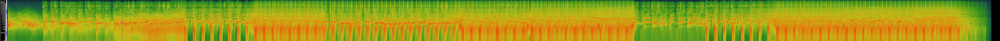

Pink Pony Club Spectogram and Waveform: 

Espresso Spectogram and Waveform:


Waveform Analysis demonstrates peaks along the axis depending upon amplitude and frequency. These display variations in pitch and volume, but do not allow for thorough analysis. With a spectogram however, the variation in colour can signal where the energy of the sound is coming from. For example, In Pink Pony Club, you can see there are majority higher amplitudes towards the beginning of the final third as there are brighter colors, rather than the darker red that previously ran throughout the song. Darker colours represent lower amplitudes. Moreso, the lines are less jagged, meaning the amplitude is less intense. This could signal it is a pop song, insinuating a change of structure (potentially a bridge), a common feature of a ABABCB pop song structure. Overall, these two forms of data prove extremely difficult for thorough analysis, they can distinguish features of pitch and volume, but do not reveal more intrinsic data such as timbre.